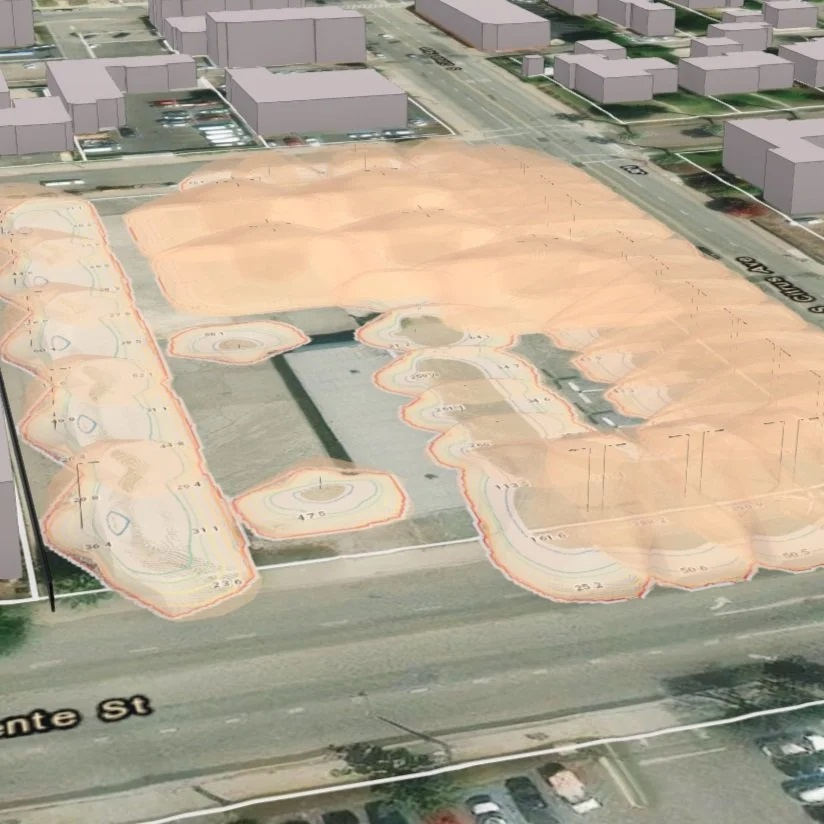
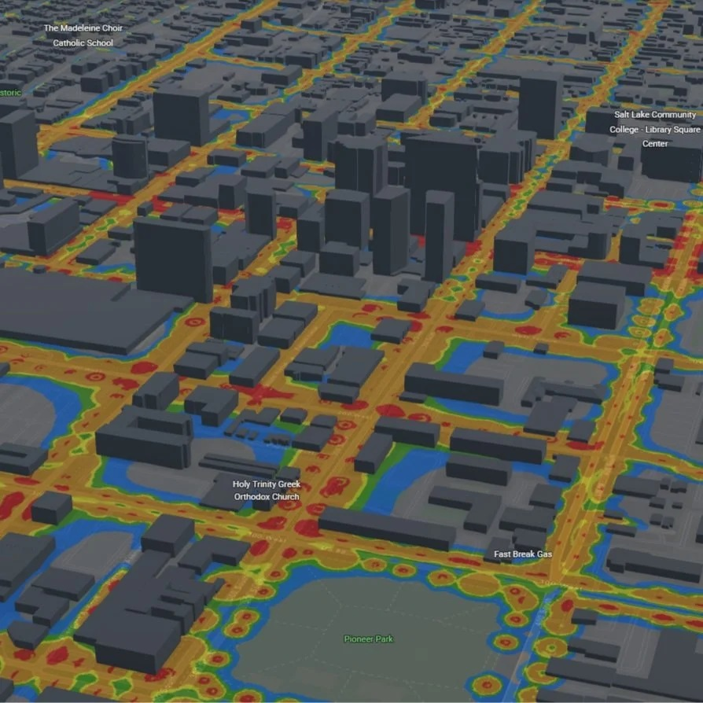
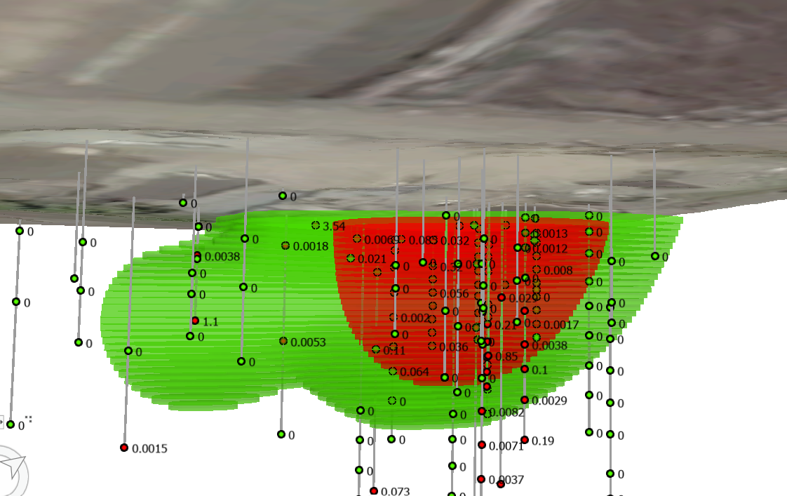
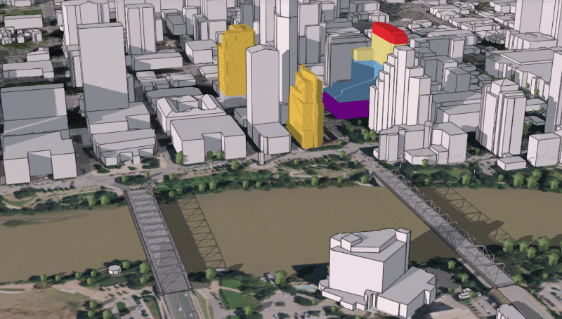
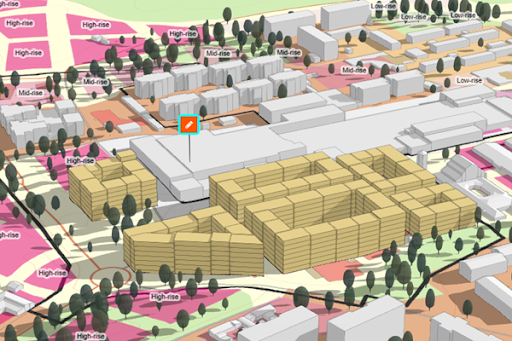
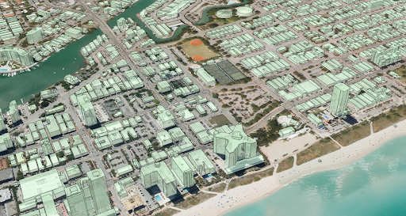

Geospatial Engineer & Consultant
Dan Hedges is a geospatial engineer, consultant, and technical sales leader who specializes in turning complex challenges into real-world impact. With experience spanning spatial analysis, AI-training workflows, remote sensing, and synthetic data generation, Dan has delivered solutions that shape how cities are planned, how risk is assessed, and how AI is developed to tackle challenging edge-cases.
Whether leading teams to high-stakes wins, building tools and workflows to solve unique industry challenges, or helping enterprise clients unlock new capabilities, Dan's focus is always the same: understand the problem deeply, solve it elegantly, and make sure it matters to the people it's built for.
Through Hedgerow GIS Consulting, he partners with organizations across urban planning, environmental science, utilities and infrastructure, and beyond, bringing senior technical expertise to problems that sit at the edge of what enterprise GIS systems can do.
Expertise
Independent Consulting
Owner & Chief Engineer — client projects across urban planning, environmental science, and utilities.


Illumination volumes (left) and illumination surface analysis (right). Images courtesy of Evari GIS Consulting.
Contributed to market differentiation for the customer and an evolution of approach in the urban lighting design industry.
Data is now used within the ArcGIS Urban solution, supporting planning initiatives for small and medium local governments throughout Southern California.

Plume model output example alongside dummy sample values.
Enabled a new capability for holistically understanding and communicating contamination impact to Aspect's customers.
Technical Sales Leadership
Lead Solution Engineer / Architect — driving enterprise growth and government partnerships in synthetic data for computer vision.
Led the project team to win the National Security Innovation Network SynGen challenge in 2023. The award expanded into a $400,000 follow-on contract with a strategic customer in the US government.
Led Rendered.ai's initiatives and authored reports for the Machine Learning and Analysis Ready Data programs.
Selected public examples of enterprise accounts closed through technical solution engineering:
Published Content
Product Engineering
3D Product Engineer — building geospatial tools and R&D initiatives that shaped ArcGIS's 3D capabilities.

3D Basemap content compared against lidar data. Image courtesy of Esri, Inc.
This solution became one of the top three most-downloaded in the ArcGIS Solutions catalog, contributing to a significant increase in adoption of 3D GIS capabilities among ArcGIS users.
Enabled ArcGIS users to evaluate complex impacts only measurable using 3D analysis, increasing the ROI of adopting 3D GIS capabilities.

ArcGIS Urban buildable volume visualization. Image courtesy of Esri, Inc.
ArcGIS Urban became a critical offering for Esri's Urban Planning customer base at a time when competitive offerings in this space were putting the sector at risk.

Automated 3D building output from a LiDAR-only input. Image courtesy of Dmitry Kudinov via Medium.com.
One of the first major uses of custom-trained computer vision models within ArcGIS Pro — this work stress-tested these capabilities and charted a new path for 3D content generation within the company.
Get in Touch
Whether you're looking for a technical partner on a complex geospatial challenge, a solution engineer to help close enterprise deals, or a consultant who can bridge the gap between cutting-edge technology and real-world impact — reach out.